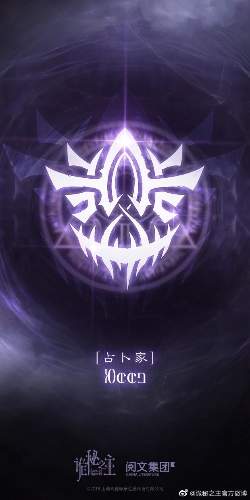
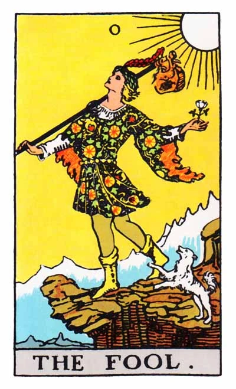

The Fool Pathway is be about fooling perceptions and reality. They specialize in divination, illusions, changing appearances, strong muscle and facial expression control, and turn other into marionettes after taking control of their spirit body threads. At High Sequences, they can turn their marionettes into another duplicate of themselves, bring things (including themselves) from the past to the present, create countless miracles, create a mysterious environment that's full of tampering and concealment, and are able to fool all sorts of things. Their authority represents Secrets and Changes. The Beyonders of this group can only exchange their pathway starting at Sequence 3. The title of Above the Sequence of the Fool Pathway is Lord of Mysteries, and the corresponding Sefirah is the Sefirah Castle. This Pathway is adjacent to the Door Pathway and Error Pathway. It's also one of the four standard pathways compatible with the Boon of the Dancer Pathway.
The symbol is a Pupil-less Eye and the Contorted Lines; represented secrecy and change. The official symbol for the Fool Pathway.The color is tyrian purple.

The corresponding tarot card of the Fool Pathway is The Fool. The Fool (0 or XXII) is one of the 22 Major Arcana, sometimes numbered as 0 or XXII. The Fool is a card of a start, a fresh beginning with all kinds of possibilities. In many esoteric systems of tarot card interpretation, the Fool is interpreted as the protagonist of a story, and the Major Arcana is the path the Fool takes through the great mysteries of life. This path is known traditionally in cartomancy as the "Fool's Journey", and is frequently used to introduce the meaning of Major Arcana cards to beginners
| Fool Pathway Index | |
| Sequence | Title |
| ◆ Low Sequence ◆ | |
| Sequence 1 | Seer |
| Sequence 2 | Clown |
| ◆ Mid Sequence ◆ | |
| Sequence 7 | Magician |
| Sequence 6 | Faceless |
| Sequence 5 | Marionettist |
| ◆ High Sequence - Saint ◆ | |
| Sequence 4 | Bizarro Sorcerer |
| Sequence 3 | Scholar of Yore |
| ◆ High Sequence - Angel ◆ | |
| Sequence 2 | Miracle Invoker |
| Sequence 1 | Attendant of Mysteries |
| ◆ Godhood ◆ | |
| Sequence 0 | Fool |
.
.